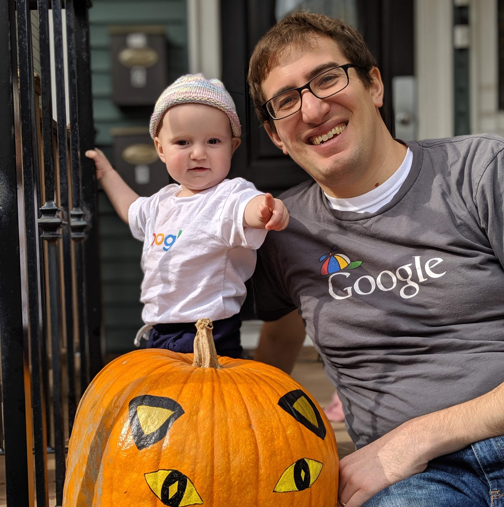

Ross Anderson's Personal Google Webpage
Bio
I am a software engineer in the Google Operations Research team in Cambridge MA. I have been at Google for 6 years. I was previously at MIT, where I obtained my PhD from the Operations Research Center under the supervision of David Gamarnik and Itai Ashlagi.
Research Areas
My current work on is focused in two areas:
- Problems in the intersection of optimization and machine learning. In particular, the problem I have been most focused on is finding the input which maximizes the output of a trained neural network. See these slides from a recent talk I gave at the MIT ORC for an overview.
- Google's infrastructure for solving optimization problems. Here, I have been most focused on adding support for advanced MIP features (like callbacks) to Google's open source OR library or-tools. Building a tool that is both performant and interoperable across solvers leads to a variety of interesting algorithmic and engineering challenges.
Previous work. While at MIT, I worked mostly in the areas of queueing theory and random graphs. I was also focused on the application of living donor kidney exchange. At Google, I spent two years working on computer graphics for free hand drawing (as seen in Google Keep and the Chrome pdf editor). On the OR team, I worked on a scheduling problem in the XLA compiler (no publication available, some related work).
Operations Research at Google Cambridge
A bit about the group.
Expertise. First and foremost, our greatest strength is in modeling optimization problems and formulating computationally tractable solutions. Often this is with MIP, but the group has experience with a wide range of methods (LP, MINLP, CP, Convex Optimization, Stochastic Optimization, Bayesian Optimization, and RL/ADP to name a few). We have a strong engineering culture and are more focused on building reusable infrastructure, rather than doing one off analyses. Most of our team's software is written in C++.
Some current members:
Current visitors:
- Ted Papalexopoulos (intern)
- Brandon Jones (intern)
- Jeremy Weiss (intern)
- Diego Escobedo (intern)
Previous visitors:
- Arthur Delarue (intern, back at MIT)
- Yeesian Ng (intern, now at Google in MTV)
- Joey Huchette (Postdoc, now at Rice)
- Will Ma (Postdoc, now at Columbia)
Prospective Googlers who want to do OR (interns, postdocs, visiting faculty, full time)
I am not a hiring manager. The statements below are my personal opinions and not Google policy.
A common question I get is, "How can I do OR at Google?" There is no simple answer to this question, as Google is a huge company. There are people doing OR on product teams, infrastructure teams, and research teams, in a variety of roles (software engineer, research scientist, data scientists/statistician). Rather than try and give a comprehensive answer, I will give a short summary of the type of what I look for in candidates I will be working with.
- Background in Operations Research/a related field/mathematical maturity. Much of the work we do is mathematical and open ended. Experience in a research setting is very useful. Many members of the team have an advanced degree (some were even previously professors), but this not a hard requirement.
- Experience with and interest in solving hard engineering problems. Everyone on the team is a strong coder. Experience with particular technologies is less important, as you learn on the job. However, everyone needs to be ready to build things themselves, there is no one to build things for you.
- Interest in working in a larger collaboration. A big advantage we have over academia is that we can solve problems that require a high degree of engineering complexity, as we do not rely on a rotating cast of graduate students for engineering. However, we need to reach a consensus on what problems we want to solve and remain focused on them.
In general, Google Research is always looking to opportunistically hire exceptional candidates, and the OR team is no exception (subject to resource constraints). If you think you meet the above criteria, please apply to Google. However, note that due to COVID-19, hiring will be much slower in the immediate future.
Publications
See my Google scholar page for a complete list.
Previous/Other websites
Personal
I live in Somerville MA with my wife Aileen and my daughter Hailey.
Disclaimer
This is not an official Google product. It is a website I put up that no one has told me to take down yet.
STEP functionality
I am currently hosting STEP interns at Google and am using this website to help test their projects. This content is solely for this purpose.